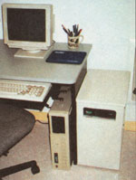
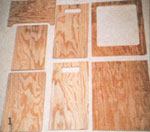
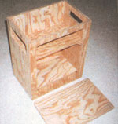
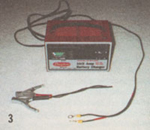
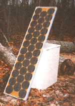
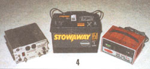
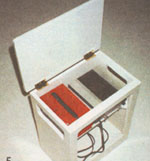
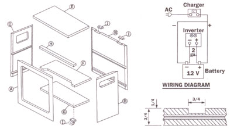
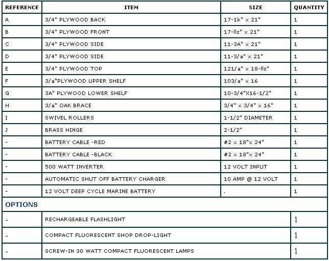
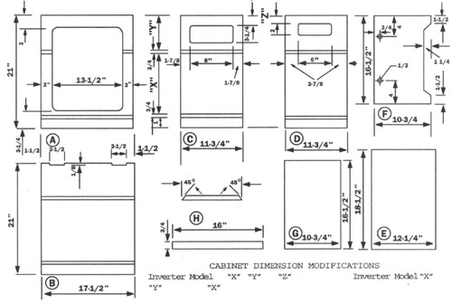

How to build a portable power station.By Jeffrey R. Yago, PE.
Less than 30 years ago, a power outage would be little more than a minor inconvenience to most people. Today, with the proliferation of home-business computers as well as answering and fax machines, a prolonged power interruption can bring your livelihood to a halt. Large cities are served by more than one electrical transmission line and most power outages usually last only as long as it takes to bypass a downed line, but country dwellers might well be stranded for days.
The most commercially available solution is a backup power supply system, but these stand-alone units (those in the $200 to $500 price range) will only keep a personal computer operating long enough to allow you to quickly save information and shut down. Not a terribly versatile solution.
This project will allow you to be prepared for the next short term power outage and maintain an almost normal life style while waiting for the line power return. The station cannot power everything in your home, but it will run a computer and fax machine, or television and VCR for up to six hours, and lighting for several rooms at the same time ...and can be built for a total cost of less than $400.
The system is designed to be stored out of the way until needed, then serve as your first line of defense in an emergency. You can also extend the power stations usefulness: load it in the car and take it on your next camping trip, or use it to power small tools or lights at the job site when a generator is not practical.
The power station has been designed around a battery charger, a deep discharge battery, and a DC to AC inverter, all mounted in an easy to build wooden cabinet. Each component has been carefully matched in performance to provide a very efficient system in a very small package.
We have chosen a deep discharge 12 volt, 850 cranking amp capacity, lead-acid marine battery. Although two 6 volt golf cart batteries wired in series will provide much better long term performance, the marine battery is sealed and is much safer to handle and keep charged in a confined space. Since this is the heart of the system, buy a quality battery rated for extended deep discharge use. A standard automobile battery will not provide satisfactory operating time and will fail completely after several deep discharge cycles.
The Tripp Lite 500 watt inverter is available at most marine or truck parts suppliers at a reasonable price and has a long track record. However, there are many good inverter brands now available to choose from including smaller and lighter ones as well as units with a low b; It battery alarm. Inverters are available in all sizes, but the 500 watt capacity is large enough to power, for a reason able amount of time, most of the appliance and lights needed in an emergency.
The Granger 10 amp capacity, 12 volt battery charger features an automatic shut off when the battery is fully charged. Do not use a trickle charger, as it will cause major battery out-gassing and high water loss when left connected for long period, of standby time. The charger selected mint be designed to automatically start the charge cycle when needed and completely shut off when the battery is recharged. This type of charger is available from most automobile parts suppliers at a slightly higher cost than a trickle charger.
Since the inverter and marine battery use wing-nut type bolted terminals, be sure to purchase pre-assembled 18" to 24" long, heavy duty #2 gauge copper battery cables with a lug-type terminal at each end. If the positive and negative cables are not color coded, wrap the positive cable with red electrical tape to avoid damaging the inverter by reversing the polarity. Do not fabricate your own cables from car jumper cables as most are not designed to handle the high battery currents required to operate the inverter. Remember, at 12 volts DC it takes ten times the amperage going into the inverter than the same load draws at 120 volts AC.
Start by buying the battery, inverter, and battery charger and verify their sizes. The inverter model we chose measures 5" high, 9 1/2" wide, and 8 1/2" long. The charger is 9" wide, 6" long, and 5" high and the battery measures 12" long, 7" wide, and 9" high. If different brands or models are used from those described, modify the cabinet size accordingly.
After checking all dimensions, start construction of the cabinet. Ours was made from a single 4ft. x 4ft. sheet of 3/4" plywood. This design is based on mitered corner construction and cut slots to support the shelving. If you do not have access to a table saw, use square corners and support the shelves with blocking. All joints should be nail and glue construction. Finish with a quality enamel paint or plastic laminate finish to match the decor of the area where the station will be kept. If you plan to make the unit portable, add metal hold-down straps and glue wood blocking around each component.
Decide which appliances and lights you feel are absolutely necessary to operate together during a power outage and see how long the power station can keep them operating. Be sure to start with a fully charged battery and do not allow the test to continue after the lights begin to dim. Completely discharging a battery will reduce its long-term life.
Always remember, even a sealed lead-acid battery can spill acid and cause severe damage to your skin if mishandled. A fully charged battery can also melt a large screwdriver if both terminals come into contact at the same time.
When the station is being used to power emergency loads, the battery discharge process does not produce any volatile gases. However, when a battery is being charged, the charging process causes the formation of hydrogen gas inside the battery. If the charging process is allowed to continue after reaching full charge, this hydrogen gas generation will rapidly increase and the gas will begin to escape through the battery vents into the room. If the room is small and not well ventilated, hydrogen gas, which is highly flammable, can build up. A quality battery charger that automatically shuts off when the battery has been recharged will greatly reduce the possibility of this type of dangerous out-gassing, however.
Most quality inverters will safely operate lights, small televisions, VCRs, and radios. However, since most inverters generate a modified or stepped square wave, some appliances designed to operate with a pure 60 cycle AC sine wave may operate at reduced capacity or not at all. We do not recommend using the power station to power any form of electric heater, hair dryer, microwave, toaster, or power saw as these loads will quickly discharge the battery and may exceed the 500 watt capacity of the inverter.
Although most computer equipment, roll-paper fax machines, and dot-matrix printers will work quite satisfactorily when connected to an inverter, do not power a laser printer, photocopier, or charge a rechargeable flashlight, as some brands of these devices will suffer major electronic component damage. For best results, decide in advance which appliances and lights will be used in an emergency and if in doubt, check with the manufacturer. When purchasing new appliances that need to operate during a power outage, read the electrical nameplate of each brand to find the model with the lowest wattage requirements.
Since this inverter will draw almost 10 amps to operate a single 100 watt lightbulb, we strongly recommend buying several 20 to 30 watt compact fluorescent lights and install these in table lamps that can be quickly plugged into the inverter's outlet in the event of a power outage. Two or more shop drop lights with fluorescent lamps and long cords will come in handy if stored in your Power Station cabinet and these can be quickly unrolled and placed in other dark rooms when needed.
This power station will deliver approximately 3/4 kilowatt-hours of operating capacity at 70°F room temperature. The larger the load or colder the room, the shorter the expected run time. During testing we powered a Dell Pentium color 100 MHz laptop computer and lighting for two rooms for four hours with capaci ty to spare. By adding a second battery or using two 6 volt golf cart batteries you can double this operating time, but a portable power station having these two deep discharge batteries will be extremely heavy to move around.
Purchase a rechargeable flashlight that has an automatic ON feature when the power goes off and keep it plugged into a wall outlet next to the power station. Also keep extra fuses for the inverter in the station cabinet as it could be totally dark when the power first goes out or if you overload the inverter. To reduce inverter heat buildup, keep the hinged top open when powering loads.
For those who want to prepare for real emergencies, modify the cabinet design and add a top storage shelf or racks to hold a small canned-heat camp stove, a first aid kit, a mount for the rechargeable flashlight, and a portable battery-powered radio with a clock feature.
Detailed construction plans are available for larger back-up systems designed to power a remote home or cabin. For more information, please call 804-457-2113.
|
 |
 |
 |
|
 |
 |
 |
|
 |
 |
 |
|
 |
|
|